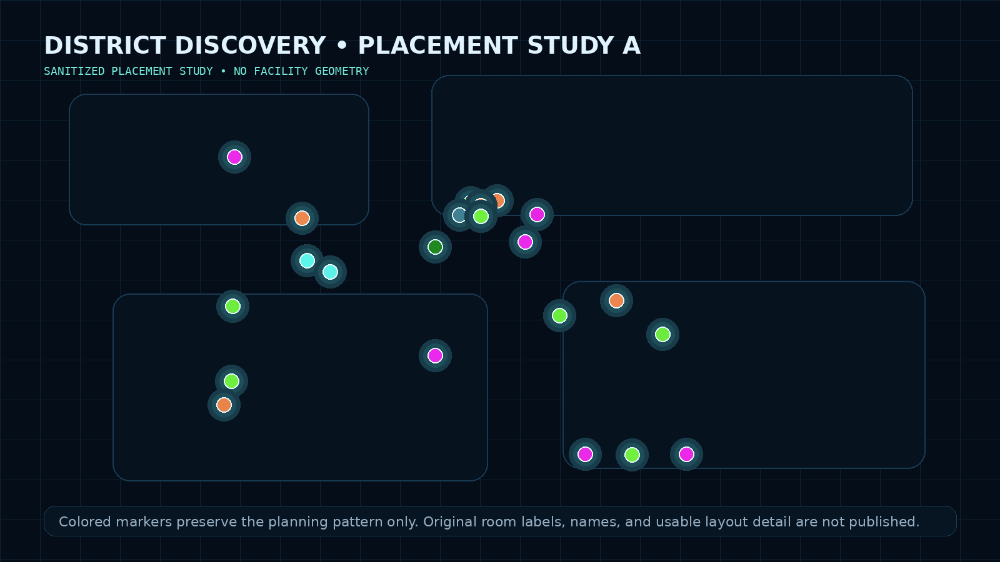
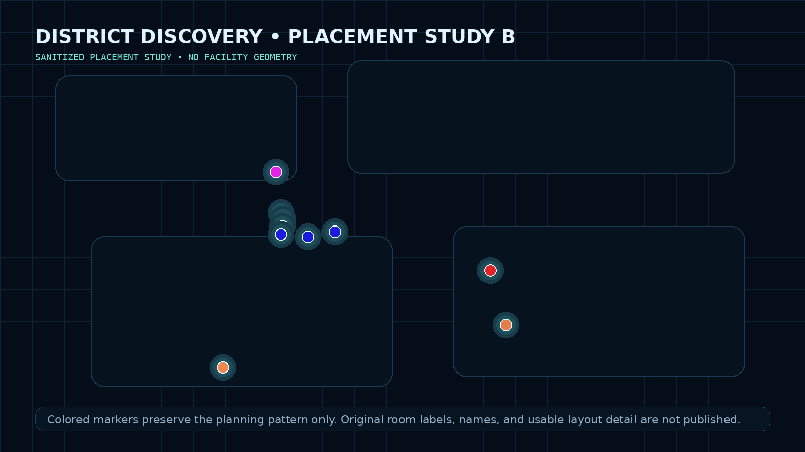

Discovery
We walked every site together, observed the existing environment, talked through workflows, and documented what users and locations actually required.
Discovery • Solution Architecture • K-12 • RFP • Managed Print
The Moore County Schools project was not approached as a one-for-one equipment replacement. We spent significant time walking every site together, reviewing the existing fleet, talking through workflows, documenting operational pain points, and determining what each location actually needed before recommending equipment.
We walked every site together, observed the existing environment, talked through workflows, and documented what users and locations actually required.
Field observations became model-specific equipment recommendations, configurations, placement decisions, and detailed floor-plan mappings.
After implementation, my role became increasingly hands-on with the school-system IT teams around MyQ, Kyocera Net Manager, integration, troubleshooting, and stabilization.
Field methodology
The goal was not to walk into a school and ask, “What copier do you want?” It was to understand what people were trying to accomplish, where the existing process was failing them, and what combination of technology, equipment, placement, and workflow could make it better.
Technical discovery + solution design
I brought the technical problem-solving, workflow-analysis, customer-discovery, and solution-design perspective: identify the pain, understand the operation, and find the technical opportunity.
Managed-print domain expertise
My teammate brought years of copier and managed-print experience and a deep understanding of device capabilities, configurations, finishing options, and practical deployment requirements.
That product expertise was critical to turning the technical solutions we envisioned into configurations the equipment could actually deliver. We walked the sites together and built the solution together.
Mapping the solution
Instead of producing a generic equipment list, proposed devices were mapped to specific areas based on what we learned during the walkthroughs. Different models and configurations were selected according to the requirements of the people and workflows around them.
The original maps contain detailed school-layout information and remain private. The examples shown here intentionally destroy usable facility detail while preserving the planning pattern.


From proposal to operations
Parallel district context
Moore and Scotland were separate district projects.The discovery artifacts shown on this page are from Moore County. Scotland County had its own environment and implementation. My post-implementation technical work extended into both districts, but Moore evidence is not being used here as a stand-in for Scotland.
Field observations, equipment selection, configuration, authentication requirements, deployment planning, documentation, and commercial requirements became a districtwide solution.
The managed-print platforms moved into the live school environment, where assumptions met real users, real networks, and real operational constraints.
I spent days and, over the life of the projects, months working directly with the Moore County Schools IT department and the parallel Scotland County Schools IT department on the technical side of the MyQ and Kyocera Net Manager environments.
That post-implementation work was substantially more independent than the original field-discovery and proposal process. It included implementation details, integration behavior, authentication and user-impact issues, troubleshooting, configuration questions, and the practical problems that appear only after a system meets a live school environment.
The distinction matters: the discovery and proposal work succeeded because of complementary teamwork; the post-implementation phase also demonstrated my ability to work directly with customer IT departments over an extended period and carry the technical solution through stabilization.
What followed me forward
Contemporary proposal material identifies Joshua McDonald as the proposal preparer, while the discovery and solution-development work itself was collaborative from the first walkthrough forward.
Evidence handling: Original RFP documents, school floor plans, customer information, pricing, signatures, equipment identifiers, and other sensitive material remain private. Public examples are derived from original project artifacts but intentionally remove or obscure identifying and security-sensitive information.